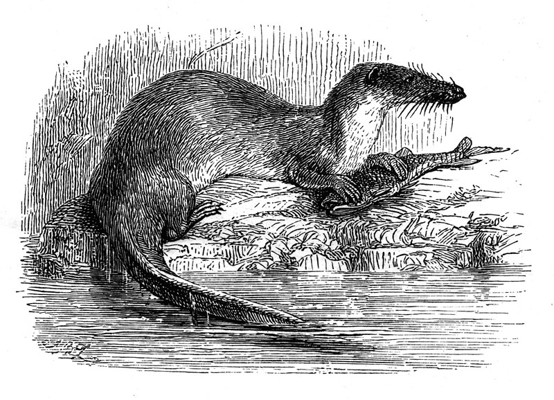

African dwarf frogs can grow to about 7.5cm long and weigh a few grams. They are completely aquatic. They scavenge for their food and will eat anything from decaying organic matter to living creatures, depending on what they can ingest. They can use their webbed feet to shove food into their mouths.
James Gathany, Public domain, via Wikimedia Commons
The african helmeted turtle is typically 20 to 32cm in length. It weighs around 2.5kg. The turtle is omnivorous and this includes group capture of birds that come to the water to drink.
Bernard DUPONT from FRANCE, CC BY-SA 2.0, via Wikimedia Commons
The allens swamp monkey is from 45 to 60cm long, males weight up to 6kg, females up to 3.5kg. It subsists on leaves and fruit as well as beetles and worms. It is a social animal, forming groups of up to 60 individuals, which communicate with calls and gestures.
Grendelkhan, CC BY-SA 3.0, via Wikimedia Commons
The banded water cobra is a largely aquatic snake. It reaches a length of between 1.4 and 2.2mtrs. It is a venomous snake and preys mostly on fish, but may also prey on various amphibians.
Al Cortiz, CC BY-SA 3.0, via Wikimedia Commons
The dwarf crocodile is the smallest living species of crocodile. They have an average length of about 1.5mtrs and weigh 18 to 32kg. These crocodiles feed mostly on fish, but also small mammals, crabs and other small creatures. The crocodiles are nocturnal and dig-out and hide in their own burrows by the water's edge.
Thesupermat, CC BY-SA 3.0, via Wikimedia Commons
The giant otter shrew is 29 - 35cm head-body length, 53 - 64cm including the tail. It weighs between 0.3 and 0.95kg. It subsists on aquatic animals. It burrows into river banks and is solitary and territorial.
